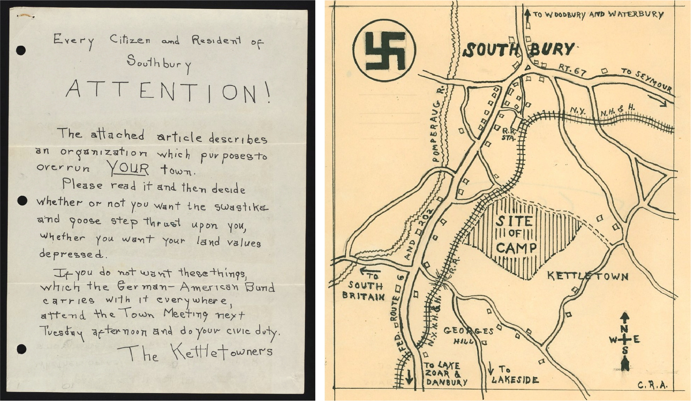
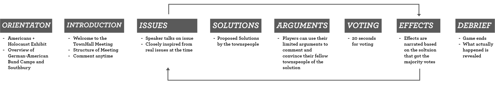

Chapter 2: Interactive Installations / Kettletowners
Washington, DC
May 2019
An interactive experience for the 'Americans + The Holocaust' Exhibit at USHMM, to make emotional and difficult content approachable for students.

‘Kettletowners’ is a multi-media roleplaying game designed to engage with this history of 1930's small town America's resistance to Nazi Bund camps occupying parts of their community. It is set in 1937, in a townhall meeting in Southbury. It was aimed to give players an opportunity to understand how and why decisions were made, and the impact that these decisions can have, to show how local, organized action can make change. We used phone polling software to see how people would drop in and out, and voice anonymous opinions.
We focused on a small overlooked part of the exhibit about the Southbury Bund conflict of 1937. This information is displayed in a transitory space of the exhibit that takes people from one section to another. Therefore, this part goes unseen in the exhibit as most people would just walk past it, without stopping to engage.
 A session of Kettletowners starts of with an orientation of the history that players will be addressing, an introduction from a town hall meeting moderator, and then a thrice-run cycle of issues, proposed solutions, and voting, to decide on the course of action.
Conditions and Materials:
* Players: 3 or more
* Time: 20 mins – 40 mins
* Phones with internet connection (for players)
* Laptop, with ‘Poll Everywhere’ downloaded
* Projector
* Speaker
We engaged with the USHMM staff and some visitors of the museum in the conceptualizing, designing, playtesting, and evaluation of game prototypes.
Made in collaboration with Waverly Wilson and Yufei Zhang during a multi-week residency at the United States Holocaust Memorial Museum.
____________________
Disclaimer: This experience was created with the attempt of honoring, and memorializing the true stories of 1937 Southbury Connecticut’s actions. In no way do we consider this game to teach players the emotional experiences those real people experienced, but we hope this game can help people better understand and engage with their history.